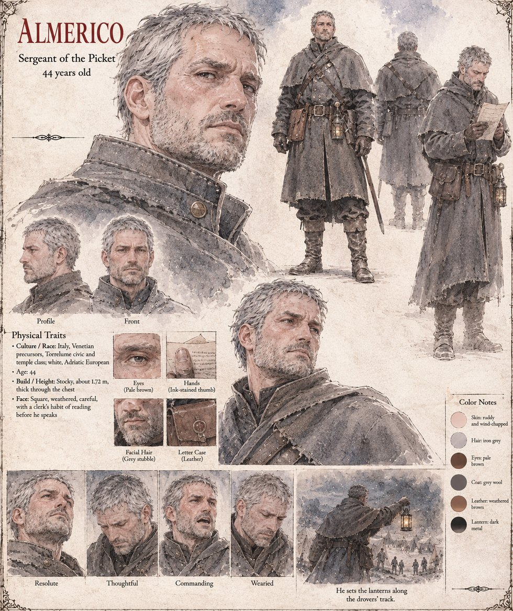

Almerico
Sergeant of the Picket of the Lamp-Host · forty men on the drovers’ track · nine desertions written up · 44 on the sheet
The Lamp-Host keeps a picket of forty men on the drovers’ track above the Field through the second winter and into the year after, lighting each dusk a ring of eleven lanterns around their tents. Their sergeant is a broad, patient man of forty named Almerico who had kept the Beacon’s own night watch for two decades before the war found a better use for him, and he writes to his wife that the northern posting is a quiet one and believes it for four months. In the last week of Kerren a picket named Vico fails the dawn count; Almerico enters him as a deserter, since deserters are common that winter and ghosts are not, and writes to Vico’s mother in Torrelume a letter he has already written eleven times with only the name changed. Two more lanterns burn down over Lorren, and the shrinking always begins at the northernmost tents, nearest the black bowl the men call the Well. The men come down to the fence in their off-hours. By the end of the month three more have a flat river-stone and a name in the Dark Ground, each entered in the Lamp-Host’s own book, in the sergeant’s hand, under a heading that does not exist on the stone.
Almerico writes up nine desertions by the spring thaw and is commended in a letter from Torrelume, which he keeps for the rest of his life, for holding a difficult post at an acceptable cost. The following autumn he moves his tents forty paces south on his own authority, and no tenth man is taken. Agata, cross-checking the Council’s casualty returns against the Order’s desertion rolls the following winter, finds nine names on both lists and nine river-stones in the Dark Ground, reads them aloud, and does not send the finding to Torrelume, since a sergeant who has already grieved nine letters has no use for a tenth grief handed him by a stranger with a ledger. Nine names. No bodies. He never in the years he has left asks himself aloud exactly why.
The manuscript gives his age (forty), his broad, patient build and his twenty years on the Beacon’s night watch, and no height, face, hair or eye colour. The sheet’s age of 44, stocky build of about 1.72 m, thick chest, square weathered face, pale brown eyes, grey stubble, iron-grey hair, ink-stained thumb, long grey wool coat and leather letter case are its own, as are its panels Resolute, Thoughtful, Commanding and Wearied. Its scene He sets the lanterns along the drovers’ track. follows the manuscript’s ring of eleven lanterns, but draws him holding one up in a snowy field with figures by the tents, which is not in the manuscript. Its title, Sergeant of the Picket, follows the manuscript.
“a broad, patient man of forty named Almerico who had kept the Beacon’s own night watch for two decades before the war found a better use for him”